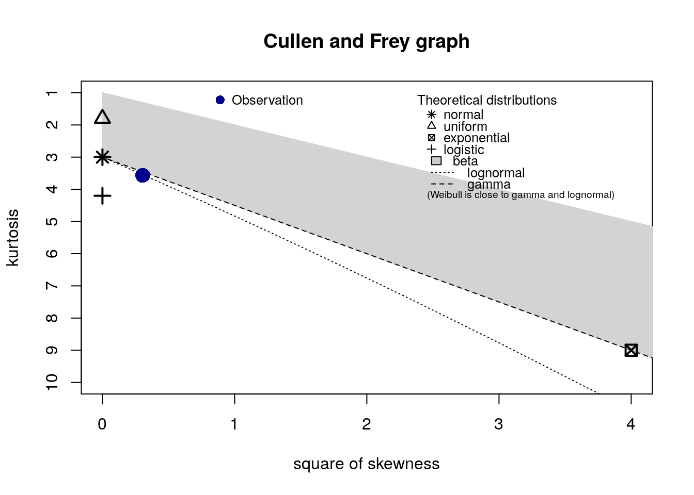

11 Pre-processing
11.1 RT filtering
11.1.1 Function to filter by RT
Here you can see an example on how to use a function to filter by RT (log filtering version below).
We use the following dataset.
library(tidyverse)
# RT Filtering function
Filter_FUN <- function(DB, Column, Low_PCT = 0.05, High_PCT = 0.95) {
args = as.list(match.call())
# Creamos Column_LOG
DB = DB %>% mutate(Column_LOG = log(eval(args$Column, DB)))
lowcut = quantile(DB$Column_LOG, Low_PCT, na.rm = T)
highcut = quantile(DB$Column_LOG, High_PCT, na.rm = T)
# Returns DB_Filtered
DB_Filtered <<- subset(DB, DB$Column_LOG > lowcut & DB$Column_LOG < highcut)
# return(DB_Filtered)
cat("**** Datos filtrados a partir de la columna", args$Column, ": ", nrow(DB) - nrow(DB_Filtered), "/", nrow(DB), "filas eliminadas ***")
}After creating the function, we read the DB and apply the filtering. A dataframe called DB_Filtered is created with the filtered data.
dataset = read_csv("Data/10-Pre_processing/RT_filtering.csv")## Parsed with column specification:
## cols(
## ID = col_integer(),
## Dem_Gender = col_integer(),
## Dem_Age = col_integer(),
## Time = col_double(),
## Formato = col_character(),
## Accuracy = col_integer()
## )dataset## # A tibble: 200 x 6
## ID Dem_Gender Dem_Age Time Formato Accuracy
## <int> <int> <int> <dbl> <chr> <int>
## 1 1 2 37 2.62 PR 0
## 2 2 2 32 23.3 PR 0
## 3 3 1 100 6.90 FN 0
## 4 4 2 34 12.9 FN 1
## 5 5 1 29 38.9 FN 1
## 6 6 2 25 42.5 FN 1
## 7 7 1 27 3.29 PR 0
## 8 8 1 29 16.4 PR 0
## 9 9 1 30 60.8 PR 1
## 10 10 2 28 26.2 PR 0
## # ... with 190 more rowsFilter_FUN(dataset, Time)## **** Datos filtrados a partir de la columna Time : 20 / 200 filas eliminadas ***DB_Filtered## # A tibble: 180 x 7
## ID Dem_Gender Dem_Age Time Formato Accuracy Column_LOG
## <int> <int> <int> <dbl> <chr> <int> <dbl>
## 1 1 2 37 2.62 PR 0 0.962
## 2 2 2 32 23.3 PR 0 3.15
## 3 3 1 100 6.90 FN 0 1.93
## 4 4 2 34 12.9 FN 1 2.56
## 5 5 1 29 38.9 FN 1 3.66
## 6 6 2 25 42.5 FN 1 3.75
## 7 7 1 27 3.29 PR 0 1.19
## 8 8 1 29 16.4 PR 0 2.80
## 9 9 1 30 60.8 PR 1 4.11
## 10 10 2 28 26.2 PR 0 3.26
## # ... with 170 more rows11.1.2 n SD from the median (MAD)3
Probably should NOT use n SD from mean
We use the following dataset.
dataset = read.csv("Data/10-Pre_processing/RT_filtering.csv")
head(dataset)## ID Dem_Gender Dem_Age Time Formato Accuracy
## 1 1 2 37 2.618 PR 0
## 2 2 2 32 23.303 PR 0
## 3 3 1 100 6.900 FN 0
## 4 4 2 34 12.905 FN 1
## 5 5 1 29 38.895 FN 1
## 6 6 2 25 42.473 FN 1- Code
#SD criteria
SD_filter = 2.5
dataset_filtered = dataset %>%
filter(Time < (median(Time) + SD_filter * sd(Time)) & Time > (median(Time) - SD_filter * sd(Time)))
# dataset_filtered = dataset[dataset$Time < (median(dataset$Time) + SD_filter * sd(dataset$Time) ) & dataset$Time > (median(dataset$Time) - SD_filter * sd(dataset$Time) ), ]- Plots
summary(dataset$Time)## Min. 1st Qu. Median Mean 3rd Qu. Max.
## 1.242 7.686 15.453 24.252 28.858 165.529summary(dataset_filtered$Time)## Min. 1st Qu. Median Mean 3rd Qu. Max.
## 1.242 7.585 14.376 19.777 26.109 77.829par(mfrow = c(1,2))
#
plot(density(dataset$Time), main = "Valid reaction time density")
plot(density(dataset_filtered$Time), main = "Valid reaction time density")
par(mfrow = c(1,1))11.1.3 Gamma law regression analyses4
We use the following dataset.
#Import to variable "dataset"
dataset = read.csv("Data/10-Pre_processing/RT_filtering.csv")
head(dataset)## ID Dem_Gender Dem_Age Time Formato Accuracy
## 1 1 2 37 2.618 PR 0
## 2 2 2 32 23.303 PR 0
## 3 3 1 100 6.900 FN 0
## 4 4 2 34 12.905 FN 1
## 5 5 1 29 38.895 FN 1
## 6 6 2 25 42.473 FN 1- Code
#Gamma
glm1 = (glm(Time ~ Formato, data = dataset, family = Gamma))
summary(glm1)##
## Call:
## glm(formula = Time ~ Formato, family = Gamma, data = dataset)
##
## Deviance Residuals:
## Min 1Q Median 3Q Max
## -2.0026 -0.9522 -0.4051 0.1645 2.7565
##
## Coefficients:
## Estimate Std. Error t value Pr(>|t|)
## (Intercept) 0.042011 0.004558 9.217 <2e-16 ***
## FormatoPR -0.001526 0.006330 -0.241 0.81
## ---
## Signif. codes: 0 '***' 0.001 '**' 0.01 '*' 0.05 '.' 0.1 ' ' 1
##
## (Dispersion parameter for Gamma family taken to be 1.177074)
##
## Null deviance: 195.70 on 199 degrees of freedom
## Residual deviance: 195.63 on 198 degrees of freedom
## AIC: 1680.6
##
## Number of Fisher Scoring iterations: 6#Gausian
glm2 = (glm(Time ~ Formato, data = dataset))
summary(glm2)##
## Call:
## glm(formula = Time ~ Formato, data = dataset)
##
## Deviance Residuals:
## Min 1Q Median 3Q Max
## -22.811 -16.245 -8.387 4.293 140.829
##
## Coefficients:
## Estimate Std. Error t value Pr(>|t|)
## (Intercept) 23.8031 2.6346 9.035 <2e-16 ***
## FormatoPR 0.8972 3.7258 0.241 0.81
## ---
## Signif. codes: 0 '***' 0.001 '**' 0.01 '*' 0.05 '.' 0.1 ' ' 1
##
## (Dispersion parameter for gaussian family taken to be 694.0939)
##
## Null deviance: 137471 on 199 degrees of freedom
## Residual deviance: 137431 on 198 degrees of freedom
## AIC: 1880.1
##
## Number of Fisher Scoring iterations: 211.1.4 Logarithms
Log filtering may not be the best option available5
We use the following dataset.
#Import to variable "dataset"
dataset = read.csv("Data/10-Pre_processing/RT_filtering.csv")
head(dataset)## ID Dem_Gender Dem_Age Time Formato Accuracy
## 1 1 2 37 2.618 PR 0
## 2 2 2 32 23.303 PR 0
## 3 3 1 100 6.900 FN 0
## 4 4 2 34 12.905 FN 1
## 5 5 1 29 38.895 FN 1
## 6 6 2 25 42.473 FN 1- Code
#SET low and high PERCENTILES
lowcutquant = 0.05
highcutquant = 0.95
# Add log-rt
# dataset_filtered = data_long_RAW
dataset$logrt <- log(dataset$Time)
# Take correct answers
# WE USE CORRECT ANSWERS TO SET TIME LIMITS!!!
# BETTER USE dataset?
corr = subset(dataset, dataset$Accuracy == 1)
lowcut = quantile(corr$logrt, lowcutquant)
highcut = quantile(corr$logrt, highcutquant)
dataset_filtered <- subset(dataset, dataset$logrt > lowcut & dataset$logrt < highcut)- Plots
plot(density(dataset_filtered$logrt), main = "Log reaction time density")
par(mfrow = c(1,2))
#
plot(density(dataset$Time[dataset$Time < 10]), main = "Density of small reaction times")
plot(density(dataset_filtered$Time[dataset_filtered$Time < 10]), main = "Density of small reaction times")
#
plot(density(dataset$Time), main = "Valid reaction time density")
plot(density(dataset_filtered$Time), main = "Valid reaction time density")
par(mfrow = c(1,1))
#
summary(dataset$Time)## Min. 1st Qu. Median Mean 3rd Qu. Max.
## 1.242 7.686 15.453 24.252 28.858 165.529 summary(dataset_filtered$Time)## Min. 1st Qu. Median Mean 3rd Qu. Max.
## 3.770 9.318 16.484 21.066 26.824 64.14111.1.5 References
11.2 Reliability
A continuación mostramos dos sistemas para calcular reliability. Alpha de Chronbach y Omega.
11.2.1 Cronbach’s Alpha
https://www.ncbi.nlm.nih.gov/pubmed/28557467?dopt=Abstract
** TODO ** * Items negatively correlated * Alphadrop function para ordenar
En R hay, al menos, dos funciones:
cronbach.alpha()-library(ltm)- interfeeres with dplyrselect()alpha()-library(psych)We use
alpha()- Gives correlation information, etc.- Procedure ** WIP: references for this procedure (?) **
- Delete items with correlations (r.drop) < 0.25 one by one:
- Eliminate the item with the smaller correlation
min(a$item.stats[["r.drop"]]) - Run reliability
- Eliminate the next item with the smaller correlation (<0.25!) - Leave at least 3 items!
- Eliminate the item with the smaller correlation
- Reasonable Cronbach score: >0.6. Good score >0.7
- Cargamos librerias
if (!require('pacman')) install.packages('pacman'); library('pacman')
p_load(readr, psych, dplyr)We use the following dataset.
temp = read_csv("Data/10-Pre_processing/Reliability.csv")## Warning: Missing column names filled in: 'X1' [1]## Parsed with column specification:
## cols(
## X1 = col_integer(),
## OA.OA01. = col_integer(),
## OA.OA02. = col_integer(),
## OA.OA03. = col_integer(),
## OA.OA04. = col_integer(),
## OA.OA05. = col_integer(),
## OA.OA06. = col_integer()
## )temp = temp[-1]
#Convierte todo a integer
# temp = temp %>% dplyr::mutate_each(funs(as.integer))
temp = as.data.frame(sapply(temp, as.integer))
head(temp)## OA.OA01. OA.OA02. OA.OA03. OA.OA04. OA.OA05. OA.OA06.
## 1 5 3 5 2 1 5
## 2 3 1 5 1 1 3
## 3 5 1 5 4 1 5
## 4 2 2 1 3 3 5
## 5 4 3 4 4 2 4
## 6 5 5 5 1 1 5alpha(temp)## Warning in alpha(temp): Some items were negatively correlated with the total scale and probably
## should be reversed.
## To do this, run the function again with the 'check.keys=TRUE' option## Some items ( OA.OA02. OA.OA04. OA.OA05. ) were negatively correlated with the total scale and
## probably should be reversed.
## To do this, run the function again with the 'check.keys=TRUE' option##
## Reliability analysis
## Call: alpha(x = temp)
##
## raw_alpha std.alpha G6(smc) average_r S/N ase mean sd
## 0.062 0.087 0.22 0.016 0.096 0.094 3.5 0.48
##
## lower alpha upper 95% confidence boundaries
## -0.12 0.06 0.25
##
## Reliability if an item is dropped:
## raw_alpha std.alpha G6(smc) average_r S/N alpha se
## OA.OA01. -0.029 -0.075 0.090 -0.0141 -0.070 0.103
## OA.OA02. -0.011 0.073 0.218 0.0154 0.078 0.105
## OA.OA03. 0.019 -0.053 0.068 -0.0102 -0.050 0.096
## OA.OA04. -0.013 0.064 0.214 0.0135 0.068 0.104
## OA.OA05. 0.252 0.318 0.356 0.0852 0.466 0.078
## OA.OA06. 0.045 0.022 0.116 0.0045 0.023 0.097
##
## Item statistics
## n raw.r std.r r.cor r.drop mean sd
## OA.OA01. 238 0.46 0.54 0.45 0.108 4.2 1.04
## OA.OA02. 238 0.55 0.43 0.11 0.071 3.2 1.40
## OA.OA03. 238 0.43 0.53 0.50 0.057 4.2 1.10
## OA.OA04. 238 0.50 0.43 0.12 0.079 2.7 1.25
## OA.OA05. 238 0.25 0.15 -0.38 -0.174 2.0 1.20
## OA.OA06. 238 0.30 0.47 0.39 0.038 4.6 0.76
##
## Non missing response frequency for each item
## 1 2 3 4 5 miss
## OA.OA01. 0.01 0.08 0.14 0.21 0.55 0
## OA.OA02. 0.17 0.14 0.27 0.16 0.25 0
## OA.OA03. 0.02 0.10 0.08 0.21 0.58 0
## OA.OA04. 0.19 0.24 0.33 0.11 0.13 0
## OA.OA05. 0.50 0.21 0.16 0.07 0.05 0
## OA.OA06. 0.00 0.03 0.09 0.16 0.73 0# temp2 = temp %>% select(-1, -OA.OA05.)
# alpha(temp2)
# temp2 = temp %>% select(-1, -OA.OA05., -OA.OA04.)
# alpha(temp2)
temp2 = temp %>% select(-1, -OA.OA05., -OA.OA04., -OA.OA02.)
alpha(temp2)##
## Reliability analysis
## Call: alpha(x = temp2)
##
## raw_alpha std.alpha G6(smc) average_r S/N ase mean sd
## 0.57 0.6 0.43 0.43 1.5 0.051 4.4 0.79
##
## lower alpha upper 95% confidence boundaries
## 0.47 0.57 0.67
##
## Reliability if an item is dropped:
## raw_alpha std.alpha G6(smc) average_r S/N alpha se
## OA.OA03. 0.43 0.43 0.19 0.43 NA NA
## OA.OA06. 0.43 0.43 0.19 0.43 NA NA
##
## Item statistics
## n raw.r std.r r.cor r.drop mean sd
## OA.OA03. 238 0.90 0.85 0.55 0.43 4.2 1.10
## OA.OA06. 238 0.78 0.85 0.55 0.43 4.6 0.76
##
## Non missing response frequency for each item
## 1 2 3 4 5 miss
## OA.OA03. 0.02 0.10 0.08 0.21 0.58 0
## OA.OA06. 0.00 0.03 0.09 0.16 0.73 011.2.2 Omega
- Cargamos librerias
if (!require('pacman')) install.packages('pacman'); library('pacman')
p_load(readr, psych, MBESS, dplyr, GPArotation)
# install.packages("MBESS", dependencies = TRUE)We use the following dataset.
temp = read_csv("Data/10-Pre_processing/Reliability.csv")## Warning: Missing column names filled in: 'X1' [1]## Parsed with column specification:
## cols(
## X1 = col_integer(),
## OA.OA01. = col_integer(),
## OA.OA02. = col_integer(),
## OA.OA03. = col_integer(),
## OA.OA04. = col_integer(),
## OA.OA05. = col_integer(),
## OA.OA06. = col_integer()
## )temp = temp[-1]
#Convierte todo a integer
# temp = temp %>% dplyr::mutate_each(funs(as.integer))
temp = as.data.frame(sapply(temp, as.integer))
head(temp)## OA.OA01. OA.OA02. OA.OA03. OA.OA04. OA.OA05. OA.OA06.
## 1 5 3 5 2 1 5
## 2 3 1 5 1 1 3
## 3 5 1 5 4 1 5
## 4 2 2 1 3 3 5
## 5 4 3 4 4 2 4
## 6 5 5 5 1 1 511.2.2.1 Method 1 - with Bootstrap 1
# Use at least (?) B = 1000
# Execution time is non-trivial
set.seed(1)
ci.reliability(data = temp, type = "omega", conf.level = 0.95, interval.type = "bca", B = 1000)## $est
## [1] 0.07509883
##
## $se
## [1] 0.05258191
##
## $ci.lower
## [1] 0.001385035
##
## $ci.upper
## [1] 0.1873718
##
## $conf.level
## [1] 0.95
##
## $type
## [1] "omega"
##
## $interval.type
## [1] "bca bootstrap"11.2.2.2 Method 2 2
# See options
omega(temp)
## Omega
## Call: omega(m = temp)
## Alpha: 0.57
## G.6: 0.56
## Omega Hierarchical: 0.17
## Omega H asymptotic: 0.24
## Omega Total 0.7
##
## Schmid Leiman Factor loadings greater than 0.2
## g F1* F2* F3* h2 u2 p2
## OA.OA01.- -0.48 0.26 0.74 0.04
## OA.OA02. 0.23 0.35 0.19 0.81 0.29
## OA.OA03.- -0.63 0.44 0.56 0.08
## OA.OA04. 0.34 0.94 1.00 0.00 0.12
## OA.OA05. 0.23 -0.43 0.26 0.74 0.21
## OA.OA06.- 0.28 -0.62 0.47 0.53 0.16
##
## With eigenvalues of:
## g F1* F2* F3*
## 0.35 1.20 0.89 0.18
##
## general/max 0.29 max/min = 6.81
## mean percent general = 0.15 with sd = 0.09 and cv of 0.61
## Explained Common Variance of the general factor = 0.13
##
## The degrees of freedom are 0 and the fit is 0
## The number of observations was 238 with Chi Square = 0.01 with prob < NA
## The root mean square of the residuals is 0
## The df corrected root mean square of the residuals is NA
##
## Compare this with the adequacy of just a general factor and no group factors
## The degrees of freedom for just the general factor are 9 and the fit is 0.42
## The number of observations was 238 with Chi Square = 97.83 with prob < 4.3e-17
## The root mean square of the residuals is 0.19
## The df corrected root mean square of the residuals is 0.24
##
## RMSEA index = 0.206 and the 10 % confidence intervals are 0.169 0.242
## BIC = 48.58
##
## Measures of factor score adequacy
## g F1* F2* F3*
## Correlation of scores with factors 0.47 0.79 0.94 0.42
## Multiple R square of scores with factors 0.22 0.62 0.89 0.18
## Minimum correlation of factor score estimates -0.56 0.24 0.78 -0.64
##
## Total, General and Subset omega for each subset
## g F1* F2* F3*
## Omega total for total scores and subscales 0.70 0.67 1.00 0.18
## Omega general for total scores and subscales 0.17 0.08 0.12 0.05
## Omega group for total scores and subscales 0.50 0.59 0.88 0.1211.2.3 References
https://www.ncbi.nlm.nih.gov/pubmed/28557467?dopt=Abstract
1 http://onlinelibrary.wiley.com/doi/10.1111/bjop.12046/pdf
2
- https://www.researchgate.net/post/Cronbachs_alpha_vs_model_based_reliability_estimates_omega_and_others_is_it_worth_the_effort
- http://personality-project.org/r/psych/HowTo/R_for_omega.pdf
- Revelle, W. & Zinbarg, R.E. (2009) Coefficients alpha, beta, omega and the glb: comments on Sijtsma. Psychometrika. 74, 1, 145-154 (http://personality-project.org/revelle/publications/rz09.pdf)
- Zinbarg, R.E., Revelle, W., Yovel, I., & Li. W. (2005). Cronbach’s Alpha, Revelle’s Beta, McDonald’s Omega: Their relations with each and two alternative conceptualizations of reliability. Psychometrika. 70, 123-133. (http://personality-project.org/revelle/publications/zinbarg.revelle.pmet.05.pdf)
- Cronbach’s alpha vs. model based reliability estimates (omega and others): is it worth the effort?: https://www.researchgate.net/post/Cronbachs_alpha_vs_model_based_reliability_estimates_omega_and_others_is_it_worth_the_effort
11.3 Impute missing data
**TODO: see https://www.r-bloggers.com/imputing-missing-data-with-r-mice-package/**
FROM: https://www.r-bloggers.com/graphical-presentation-of-missing-data-vim-package/
if (!require('pacman')) install.packages('pacman'); library('pacman')
p_load(VIM, mice, dplyr, tibble)
dat <- read.csv(url("https://goo.gl/4DYzru"), header = TRUE, sep = ",")
head(dat)## Age Gender Cholesterol SystolicBP BMI Smoking Education
## 1 67.9 Female 236.4 129.8 26.4 Yes High
## 2 54.8 Female 256.3 133.4 28.4 No Medium
## 3 68.4 Male 198.7 158.5 24.1 Yes High
## 4 67.9 Male 205.0 136.0 19.9 No Low
## 5 60.9 Male 207.7 145.4 26.7 No Medium
## 6 44.9 Female 222.5 130.6 30.6 No Lowset.seed(10)
missing = rbinom(250, 1, 0.3)
dat$Cholesterol = with(dat, ifelse(BMI >= 30 & missing == 1, NA, Cholesterol))
sum(is.na(dat$Cholesterol))## [1] 16init = mice(dat, maxit = 0)
meth = init$method
predM = init$predictorMatrix
meth[c("Cholesterol")] = "pmm"
set.seed(101)
imputed = mice(dat, method = meth, predictorMatrix = predM, m = 1)##
## iter imp variable
## 1 1 Cholesterol
## 2 1 Cholesterol
## 3 1 Cholesterol
## 4 1 Cholesterol
## 5 1 Cholesterolimp = complete(imputed)
dt1 = dat %>%
select(Cholesterol, BMI) %>%
dplyr::rename(Cholesterol_imp = Cholesterol) %>%
mutate(
Cholesterol_imp = as.logical(ifelse(is.na(Cholesterol_imp), "TRUE", "FALSE"))
) %>%
rownames_to_column()
dt2 = imp %>%
select(Cholesterol, BMI) %>%
rownames_to_column()
dt = left_join(dt1, dt2)## Joining, by = c("rowname", "BMI")head(dt)## rowname Cholesterol_imp BMI Cholesterol
## 1 1 FALSE 26.4 236.4
## 2 2 FALSE 28.4 256.3
## 3 3 FALSE 24.1 198.7
## 4 4 FALSE 19.9 205.0
## 5 5 FALSE 26.7 207.7
## 6 6 FALSE 30.6 222.5vars <- c("BMI","Cholesterol","Cholesterol_imp")
marginplot(dt[,vars], delimiter = "_imp", alpha = 0.6, pch = c(19))
Leys, C., Ley, C., Klein, O., Bernard, P. & Licata, L. Detecting outliers: Do not use standard deviation around the mean, use absolute deviation around the median. J. Exp. Soc. Psychol. 49, 764–766 (2013).↩